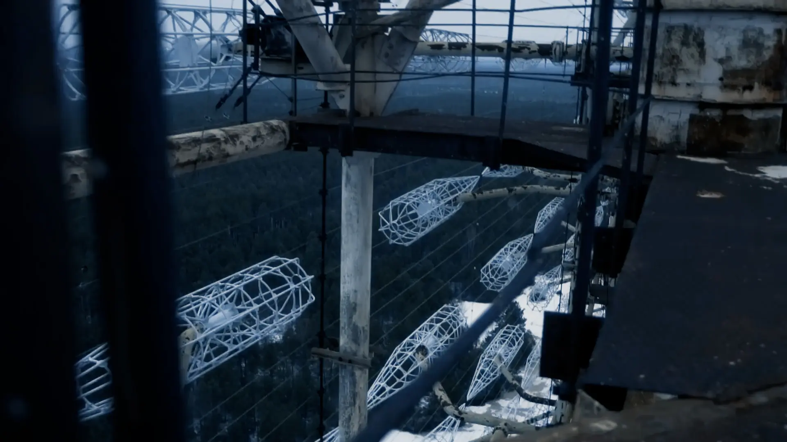
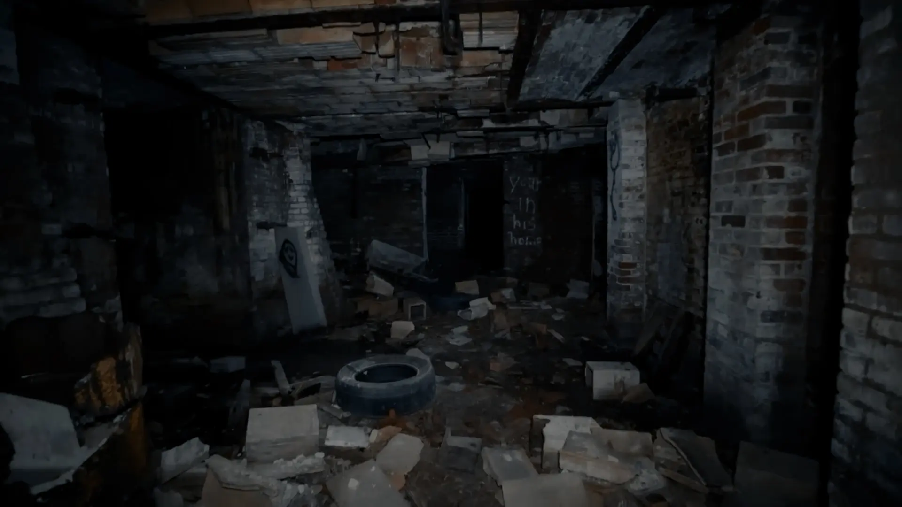

“ LOST ” explores what it means to be displaced, by disaster, by borders, by circumstance, and asks the central question : where do we belong when the places meant to hold us can no longer keep us ?
“ LOST ” is an experimental film about people pushed away from their homes. Some return to what remains, a home that no longer resembles the one they left behind. Others search for home they are never allowed to reach, moving through borders, shelters, and hidden spaces where belonging is denied to them. The film mirrors these human experiences with all the environments it moves through.

Lost places become a metaphor for the emotional state of those who wander without safety. Where do we actually feel safe ? What does “ home ” mean when the world keeps shifting beneath us ?
Told through two alternating perspectives, the film continuously pulls he viewer back and forth. The viewer is invited to question their own position of the observer, intruder, witness or companion.

LOST blends real-world with simulated footage, highlighting the tension between lived experience and its distanced representation. The world appears familiar but unstable. Like life itself, the film begins and ends in silence. Can we find hope or is leaving the only way to survive ?